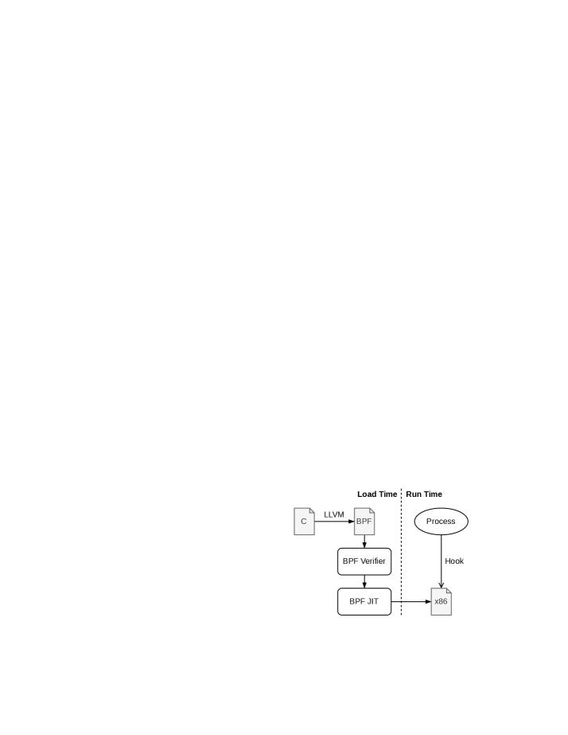
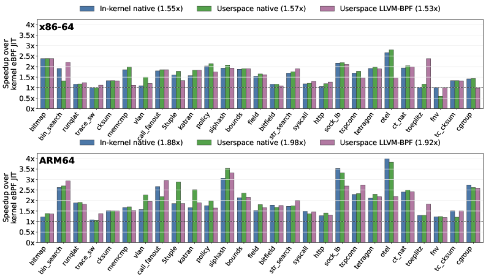

Proves in Lean 4 that each eBPF native-emit operation computes the same result as its vanilla-bytecode proof sequence.
Abstract
eBPF safely extends OS kernels in domains such as networking, observability, and security. The safety comes from an in-kernel compilation pipeline where a verifier checks every program, and a kernel just-in-time compiler (JIT) translates the verified bytecode to native code. The kernel keeps the JIT simple to stay trustworthy, translating one bytecode instruction at a time in a single pass. This single-pass design misses optimization opportunities, so eBPF runs up to twice as slow as natively compiled code in our characterization. Adding optimizations to the kernel JIT directly requires upstream acceptance and a long release cycle, enlarges the trusted computing base (TCB), and grows the per-architecture kernel code. To address this, we present Kops, an extension interface that lets userspace compilers and kernel modules introduce new operations without modifying the kernel core, while keeping a minimal trusted computing base (TCB). Each operation has two forms, a proof sequence of vanilla eBPF instructions that the existing verifier checks and a native emit of machine instructions that the JIT compiles. Because the verifier checks the proof sequence, the native emit is the only per-operation addition to the TCB. Hardware idioms are the lowest-hanging fruit for this interface. With Kops, we build EInsn, seven operations such as rotate and conditional select that CPUs execute as single instructions. Lean 4 proofs show that each native emit computes the same result as its proof sequence. On x86-64 and ARM64, EInsn speeds up eBPF microbenchmarks by up to 24% and production applications by up to 12%. The same interface also supports whole-program native replacement, reaching 2.358x at the cost of a larger TCB.
Problem
The eBPF kernel JIT's single-pass design misses optimization opportunities, running up to 2x slower than natively compiled code.
Approach
Kops provides an extension interface where each operation has a proof sequence (vanilla eBPF checked by the verifier) and a native emit (machine instructions compiled by the JIT). Lean 4 proofs show each native emit computes the same result as its proof sequence. Seven EInsn operations (rotate, conditional select, etc.) are implemented.

Figure 4 . The original eBPF pipeline (orange) and the Kops pipeline (green). The original pipeline verifies and JIT-compiles the bytecode unchanged, producing under-optimized native code. With Kops , the compile-time recognizer rewrites supported operations into extended instructions, and the EInsn modules supply each operation’s proof sequence to the verifier and its native emit to the JIT, prod
Results
EInsn speeds up eBPF microbenchmarks by up to 24% and production applications by up to 12% on x86-64 and ARM64. Whole-program native replacement reaches 2.358x speedup.

Figure 2 . Per-case speedup over the kernel eBPF JIT on the 27 pure-bytecode microbenchmarks, on x86-64 (top) and ARM64 (bottom). Each bar is one non-baseline path. The ARM64 paths come from separate runs, each over its own baseline.